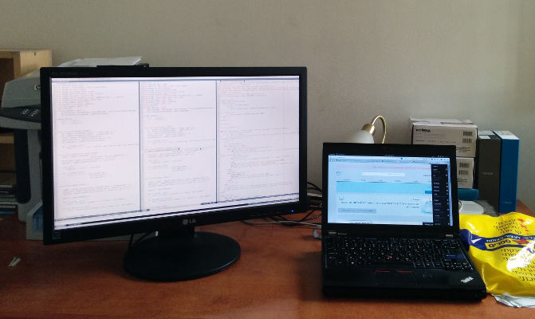
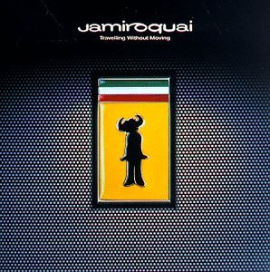

tmux and vim
My workflow and some favorite plugins
Workflow
Home
- Multiple projects
- Multiple languages and databases
- Switching between them frequently
Work
- Windows machine
- Linux virtual machine
- Single project
tmux
Terminal multiplexer, like screen only better IMO.
This book fast tracked me into it.
tmuxinator
Manage tmux sessions
tmux.conf customization
- CTRL+A for prefix
- Vim like movement between panes
- tmux.conf reloading
- Status line customization
See My config.
Tips
- Shift + Mouse for regular terminal mouse activities
- PREFIX+[ for copy mode/navigation
- /: search
- SPACE + movement: select
- ENTER: copy/exit
- PREFIX+] for paste
vim - Old Faithful
By Jon Sullivan [Public domain]Learning - the basics
 http://www.thejach.com/view/2012/07/vims_learning_curve_is_wrong
http://www.thejach.com/view/2012/07/vims_learning_curve_is_wrong
Don't learn shortcuts or cheat sheets, it's a language
Modes
Be in normal mode as much as possible
Motions
| Key | Motion |
|---|---|
| ^ | Beginning of line |
| $ | End of line |
| 0 | First column |
Text objects
i = in, a = all (around)
| Obj | Text object |
|---|---|
| iw | inside word |
| i( | Inside brackets |
| i" | Inside quotes |
| ip | Inside paragraph |
:h text-objects
More motions

Travelling Without Moving, Jamiroquai
More motions
| Command | Motion |
|---|---|
| f / F | Find char to right/left |
| t / T | Till char to right/left |
| ; | Repeat find/till |
| , | Repeat find/till in opposite direction/till in opposite direction |
| % | Find match |
Motions and verbs can be preceded with count.
Verbs
| key | Verb |
|---|---|
| d | Delete with motion |
| c | Change. Delete by motion and switch to insert mode |
| y | Yank, aka copy, with motion |
| = | Format/filter |
Combinations
Combinations
| Command | Result |
|---|---|
| ci( | Change in () |
| cit | Change inside tag |
| c2t, | Change till 2nd comma |
♥
| Action | Result |
|---|---|
| . | Repeat last change |
| =i{ | Format inside curly brackets (e.g: js, golang} |
| =it | Format inside tag |
| ci( | Change inside () |
| 5dd | Delete 5 lines |
| yat | Copy all tag |
| % | Find match |
| gq<motion> | Format to text width |
| CTRL-A, CTRL-X | Increment/Decrement numbers |
| :set rnu | Relative numbers |
♥ completions
| Action | Completion |
|---|---|
| CTRL-N | Simple completion from open buffers |
| CTRL-X CTRL-F | Filesystem completion |
| CTRL-X CTRL-O | Omni completion |
Dislike
- Synchronous plugins
- Console vim not refreshing when getting back to it.
Bookmarks
| Action | Result |
|---|---|
| m<lowercase letter> | Bookmark in current buffer |
| m<uppercase letter> | Bookmark Across buffers |
| `<letter> | Goto bookmarked letter |
Special bookmarks
| Bookmark | Meaning |
|---|---|
| . | Move to previous edit |
| , | Move to cursor position before jump |
Customizations
| binding | Action |
|---|---|
| jj | <Esc> |
| , | <Leader> |
| <Leader>v | Load .vimrc |
| <Leader>V | Activate changes to .vimrc |
| <F2> | Close current split (window) |
| <Leader>S | Remove trailing whitespace |
| <CTRL>hjkl | Window movement commands |
| <Leader>d | Delete buffer, keep the split |
| -, + | Resize horizontal splits |
| <ALT>< <ALT>> | Resize vertical splits |
| <F9> | Toggle logical (RTL) editing |
Plugins
Hands on with some of my favorite ones
Caveat: Synchronous
IMO the worst part of VIM, plugins run synchronously
Vundle
plug-in manager
Was with Pathogen beforeVundle
- :PluginInstall
- :PluginUpdate
- :PluginList
MiniBufExplorer
Buffer explorer
I prefer splits over tabs
fugitive.vim
Git wrapper, simply great
The Fugitive Series at VimCasts
And vim-lawrencium for mercurial
vim-dispatch
Aasynchronous commands dispatcher
When inside tmux, opens a split, runs in it and captures the output.
Fugitive will use it for :Gpush, :Gpull
:Dispatch ./manage.py compilemessages -l he
:Dispatch gulp test
surround.vim
all about "surroundings": parentheses, brackets, quotes, XML tags, and more.
Easily delete, change and add such surroundings in pairs.
ack.vim
Frontend for the ack command
Custom shortcut: g*
Syntastic
Syntax checking hacks for vim
ctrlp.vim
Fuzzy file, buffer, mru, tag, etc finder
Custom shortcut: gr for CtrlPBufTag
NERD Tree
Tree expolrer
snipMate + snipmate-snippets
TextMate's snippets features in Vim
auto-pairs
Insert or delete brackets, parens, quotes in pair.
MatchIt
Extended % matching for HTML, LaTeX, and many other languages.
MatchTag, highlight maching tag
vim-multiple-cursors
Sublime Text style multiple selections for Vim
splitjoin.vim
simplifies the transition between multiline and single-line code
tcomment_vim
extensible & universal comment vim-plugin that also handles embedded filetypes
gc<motion>
Or visual selection + gc
Language specific
Python
python-mode
PyLint, Rope, Pydoc, breakpoints from box.
- Support Python version 2.6+ and 3.2+
- Syntax highlighting
- Virtualenv support
- Run python code (<leader>r)
- Add/remove breakpoints (<leader>b)
- Improved Python indentation
- Python folding
python-mode
- Python motions and operators (]], 3[[, ]]M, vaC, viM, daC, ciM, ...)
- Code checking (pylint, pyflakes, pylama, ...) that can be run simultaneously (:PymodeLint)
- Autofix PEP8 errors (:PymodeLintAuto)
- Search in python documentation (K)
- Code refactoring <rope refactoring library> (rope)
- Strong code completion (rope)
- Go to definition (<C-c>g for :RopeGotoDefinition)
- And more, more ...
jedi-vim
Trying it for python auto completion, navigation, etc
po.vim - Gettext support
Also for Django's translations files
| \m Next untranslated string |
| \p Prev untranslated string |
| \c Copy msgid to msgstr |
Go - vim-go
- Completion
- gofmt
- Go to symbol, definition
- Tags support
My vim setup
https://github.com/MeirKriheli/dotvim
Learn, use, fork
Thanks!
Questions ?